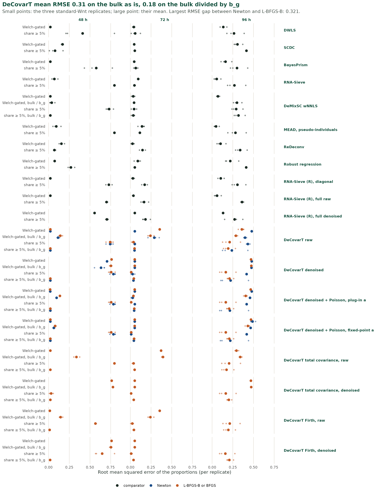
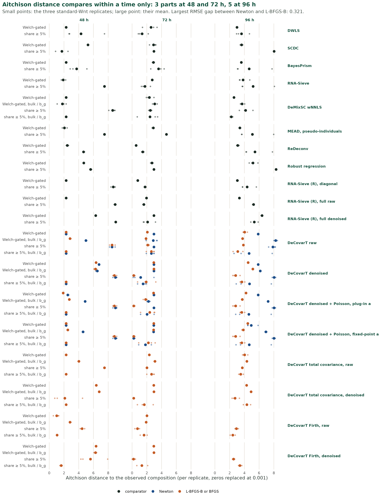
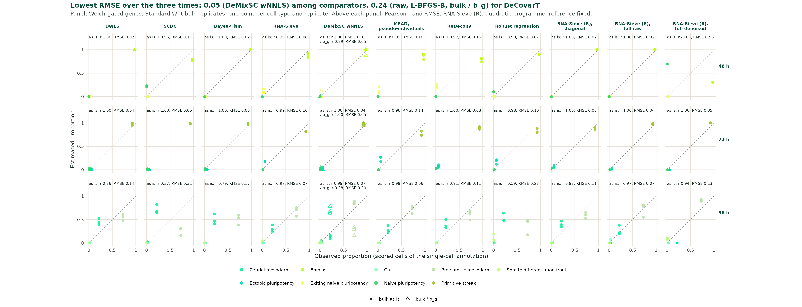
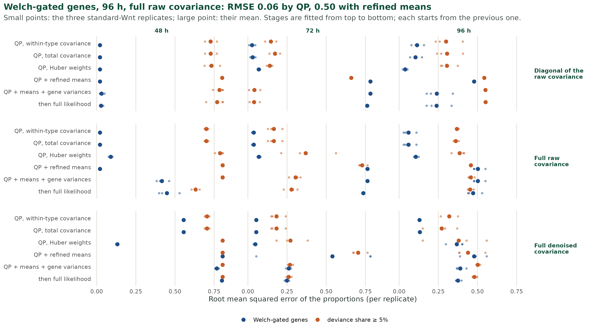
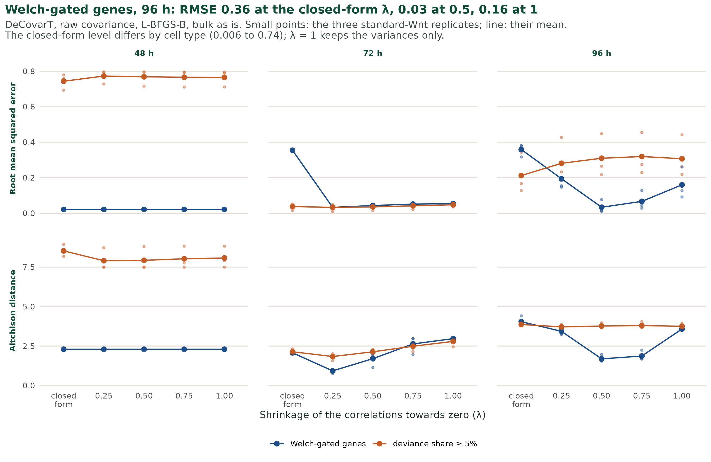
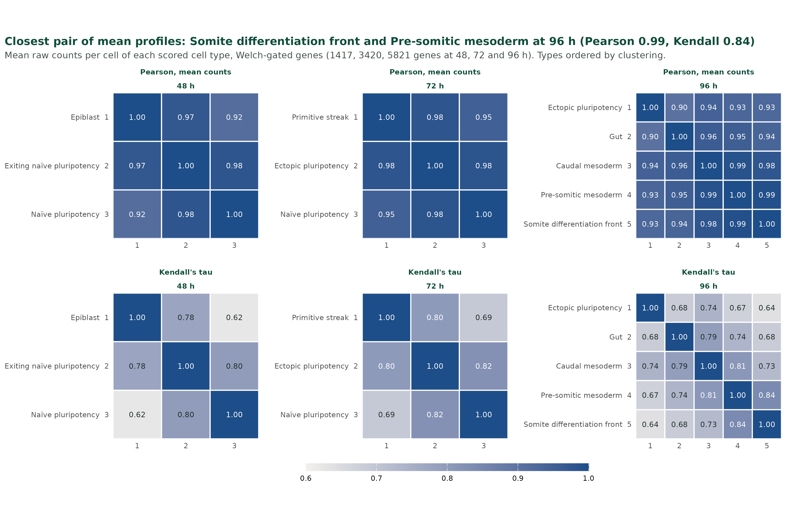

# Not run. y: one bulk sample (G genes, raw counts); mu: G x J mean
# signature; sigma_w: G x G x J within-type covariances; sigma_pop:
# G x G x J covariances for the population convolution. Same panel and
# reference for every method.
fit_newton <- DeCovarT::deconvolute_single_cell(
y, mu, sigma_w, optimiser = "newton"
)
fit_ml <- DeCovarT::deconvolute_ratios_Marquardt_Levenberg(
y, mu, sigma_pop
)
fit_nnls <- DeCovarT::deconvolute_ratios_nnls(y, mu)
fit_rlm <- DeCovarT::deconvolute_ratios_rlm(y, mu)
# Third-party packages (not in renv.lock); check signatures first.
# BayesPrism::new.prism(); BayesPrism::run.prism(); BayesPrism::get.fraction()
# SCDC::SCDC_prop_ONE()
# DWLS::solveDampenedWLS(S, B)
# MEAD::MEAD()5.1 What is being compared
DeCovarT deconvolves bulk profiles with both a mean signature and a per-type covariance. Every method below uses the same gene panel and the same labelled single-cell reference; they differ in what they model beyond the mean. All runs are planned on GSE229386, at 48 h, 72 h and 96 h, for the standard Wnt pulse and the early pulse (Section 2.1). Each model is reviewed in 5.1, review; one line here says what it models and how it is called.
5.1.1 Second-generation, mean-based
- BayesPrism (Chu et al. 2022) — a multinomial likelihood on bulk counts with the single-cell reference as a prior on cell-type expression, updated by Gibbs sampling. R,
BayesPrism:new.prism(),run.prism(),get.fraction(). - SCDC (Dong et al. 2021) — weighted non-negative least squares with clipped gene weights, and an ensemble over several references. With one reference the ensemble step does nothing. R,
SCDC:SCDC_prop(), orSCDC_prop_ONE()for a one-subject reference. - DWLS (Tsoucas et al. 2019) — dampened weighted least squares, weights the inverse squared fitted mean, capped by a dampening constant. R,
DWLS:solveDampenedWLS().
TODO-cite: Chu et al. 2022 (BayesPrism, key chuCellTypeGeneExpression2022) and Dong et al. 2021 (SCDC, key dongSCDCBulkGene2021) are in DeCovarT inst/REFERENCES.bib, not in bibliography/REFERENCES.bib.
5.1.2 Single-cell likelihood strategy
- DeCovarT, profile Newton — the linear single-cell layer, with \boldsymbol{\Sigma}_{W,j} weighted by p_{ji} and both sample scales profiled out, maximised by trust-region Newton in ILR coordinates (2.1, profile Newton). R:
DeCovarT::deconvolute_single_cell(optimiser = "newton"). - DeCovarT, Levenberg–Marquardt — the released population convolution, covariance \sum_j p_{ji}^{2}\boldsymbol{\Sigma}_j, maximised by
marqLevAlgin ILR coordinates. With a one-specimen reference the quadratic slot is the wrong one (2.1, one replicate); the fit is the reference point for the released model. R:DeCovarT::deconvolute_ratios_Marquardt_Levenberg(). - RNA-Sieve (Erdmann-Pham et al. 2021) — genes independent; a central-limit Gaussian bulk whose variance is linear in the cell count, with the reference means as noisy regressors and sandwich intervals. Python,
rnasieve(songlab-cal/rna-sieve):model_from_raw_counts(), thenpredict(). - MEAD (Xie and Wang 2023) — an estimating equation corrected for reference measurement error, with gene–gene dependence in the sandwich variance and intervals for \boldsymbol{p}. R,
MEAD(DongyueXie/MEAD):MEAD(). - ReDeconv (Lu et al. 2025) — keeps the transcriptome size S_j in the reference, corrects gene length on the bulk side only, and models the within-type variance through a central-limit law over cells. Code
jyyulab/redeconv; entry point to be taken from its tutorial.
5.1.3 Gold-standard baselines
- NNLS — non-negative least squares on the mean signature, then projection on the simplex; homoscedastic, mean only. R:
DeCovarT::deconvolute_ratios_nnls(), which callsnnls::nnls(). - Robust linear regression (RLM) — Huber M-estimation of \boldsymbol{y}\approx\boldsymbol{\mu}\boldsymbol{p}, which down-weights outlying genes. R:
DeCovarT::deconvolute_ratios_rlm(), which callsMASS::rlm(method = "M").
5.2 Statistical interpretation of the results
Two scenarios are kept apart, because they answer different questions. In the first, each method chooses its own genes, so a difference between two methods mixes the gene set, the input scale and the estimator. In the second, every method receives the same genes, so a difference comes from the estimator alone.
5.2.1 Scenario 1: each method selects its own genes
The earlier runs on these data (GastroDeconv2FateMap) called the methods through the omnideconv wrapper. Its benchmark states the policy: the authors “consulted the methods’ developers for guidance on optimal parameter settings and data type usage. In the absence of feedback, we ran the corresponding method with default parameters and considered counts and transcripts per million (TPM) as single-cell and bulk RNA-seq input data, respectively” (Dietrich et al. 2026, p. 5). Signature building and deconvolution are run as two steps for DWLS and SCDC, among others (p. 27). TODO-cite: Dietrich et al. 2026, omnideconv, Genome Biology 27:6, doi:10.1186/s13059-026-03955-w; not in Zotero nor in bibliography/REFERENCES.bib.
Under that policy the three second-generation methods do not see the same genes, nor the same weights (Table 5.1).
| Method | Genes kept | Weight of a gene in the fit | Input scale in the omnideconv benchmark |
|---|---|---|---|
| DWLS | Markers only. MAST test of each type against the rest; genes with adjusted p below pval.cutoff and \log_2 fold change above diff.cutoff = 0.5; the top g per type by fold change, with g scanned from 50 to 200 and chosen to minimise the condition number of the signature (DWLS::buildSignatureMatrixMAST()) |
Inverse squared fitted value, capped by the dampening constant | pval_cutoff = 0.05, other defaults (p. 29); scale not reported in the DWLS paragraph |
| SCDC | No selection: every gene shared by the reference and the bulk | Iterated weights 1/(\nu+\hat\delta_g^{2}), with \hat\delta_g the residual of gene g (SCDC::SCDC_prop_ONE()); the weighted basis is used (weight.basis = TRUE) |
Single-cell counts, bulk TPM, one reference (p. 29) |
| BayesPrism | No marker step inside new.prism(); genes that dominate a bulk are dropped (outlier.cut = 0.01, outlier.fraction = 0.1). cleanup.genes() and select.marker() are optional steps left to the user |
None explicit: a multinomial likelihood, so a gene counts in proportion to its reads | Un-normalised counts for both inputs; cell types only (p. 27). Gene clean-up: not reported |
Hypothesis for the gastruloid reference (not tested here). DWLS is the only one of the three that prunes genes on the condition number of the mean signature. Labelled states at 48 h, 72 h and 96 h lie on a continuum, so neighbouring types have nearly collinear mean profiles. A rule that minimises the condition number then keeps the genes that separate a few dominant lineages and drops those that distinguish closely related types. SCDC and BayesPrism keep those genes, with a low weight or a low read share. That would explain estimates that agree between SCDC and BayesPrism and differ for DWLS (Figure 5.1).

Two cautions:
- The benchmark does not support the hypothesis directly. Dietrich et al. report DWLS among the most stable methods across annotation resolutions and the one with the least spillover between related immune types (pp. 8 and 13). They compare two DWLS signatures and find the better deconvolution with the lower condition number (p. 16). Their references are immune and tumour atlases with ground truth from flow cytometry, not a developmental continuum.
- Scenario 1 cannot isolate the cause. DWLS differs from the other two by its genes, its weights and its solver at once.
5.2.2 Scenario 2: one gene panel for every method
The runs of this book give every method the same genes, the same scored cells and raw counts (scripts/04_01_stats_deconvolution.R):
- two panels per time, the Welch-gated genes and their subset with R^2_D\ge 5\% (Section 3.3);
- the solver of each method, called directly, without its own marker step:
DWLS::solveDampenedWLS()on the mean signature,SCDC::SCDC_prop_ONE(),BayesPrismwith its outlier filter off,rnasieve, and the DeMixSC weighted NNLS; - DeCovarT with four covariance inputs, with and without the gene-wise platform ratio, and two optimisers.
A difference between methods is then a difference between estimators. A difference between the two panels, for one method, measures what the gene set contributes. If the hypothesis of scenario 1 holds, DWLS on the shared panel should move towards SCDC and BayesPrism.
The second pass (11 November 2026) adds to that list MEAD with four pseudo-individuals per type, ReDeconv on supplied moments, robust linear regression (DeCovarT::deconvolute_ratios_rlm()), and four diagnostic families written in R/04_02_stats_sieve_multivariate.R: a multivariate RNA-Sieve, DeCovarT at other shrinkage levels, DeCovarT with the between-type covariance term, and Firth-penalised DeCovarT.
Local symbols, used in this section only: \boldsymbol{w}=n\boldsymbol{p}, unnormalised weights for a bulk of n cells; \boldsymbol{S}_W(\boldsymbol{p})=\sum_j p_j\boldsymbol{\Sigma}_j, the mixture covariance of the DeCovarT single-cell model; \boldsymbol{S}_T(\boldsymbol{p}), the same with the between-type term (Equation 5.2); d_g, a gene-wise variance scale; \lambda, the shrinkage of Section 4.4.1.
Results on a shared panel
Status: point estimates, three standard-Wnt replicates per time, the observed composition being the share of scored cells in the single-cell annotation (not flow cytometry). No interval is reported. Each mean below is over three bulk replicates of one protocol.
output/deconvolution/benchmark_metrics.csv). Bulk as is. DeCovarT rows: L-BFGS-B. Rows are ordered by the last column.
| Method | 48 h, $R^2_D\ge 5\%$ | 48 h, Welch | 72 h, $R^2_D\ge 5\%$ | 72 h, Welch | 96 h, $R^2_D\ge 5\%$ | 96 h, Welch |
|---|---|---|---|---|---|---|
| DeCovarT, raw covariance, λ = 0.5 | 0.769 | 0.021 | 0.036 | 0.043 | 0.310 | 0.034 |
| MEAD, pseudo-individuals | 0.795 | 0.093 | 0.115 | 0.141 | 0.282 | 0.048 |
| RNA-Sieve (Python) | 0.795 | 0.070 | 0.049 | 0.095 | 0.270 | 0.056 |
| RNA-Sieve (R), QP, full raw covariance | 0.700 | 0.021 | 0.166 | 0.038 | 0.362 | 0.060 |
| DeMixSC wNNLS | 0.731 | 0.021 | 0.045 | 0.035 | 0.291 | 0.071 |
| ReDeconv | 0.070 | 0.155 | 0.147 | 0.026 | 0.339 | 0.103 |
| RNA-Sieve (R), QP, diagonal | 0.728 | 0.021 | 0.173 | 0.031 | 0.306 | 0.105 |
| DWLS | 0.411 | 0.021 | 0.059 | 0.042 | 0.265 | 0.135 |
| BayesPrism | 0.576 | 0.021 | 0.066 | 0.047 | 0.301 | 0.162 |
| Robust regression | 0.270 | 0.073 | 0.054 | 0.090 | 0.412 | 0.220 |
| SCDC | 0.078 | 0.168 | 0.054 | 0.047 | 0.415 | 0.307 |
| DeCovarT, raw covariance, closed-form λ | 0.744 | 0.021 | 0.038 | 0.355 | 0.212 | 0.359 |
| DeCovarT, denoised covariance | 0.756 | 0.761 | 0.010 | 0.053 | 0.166 | 0.470 |
What Table 5.2 and Figure 5.2 show:
- At 96 h on the Welch panel, five estimators are within 0.03 to 0.07 of the observed composition: DeCovarT on the raw covariance shrunk at \lambda=0.5 (0.034), MEAD (0.048), RNA-Sieve (0.056), the quadratic programme of the multivariate RNA-Sieve with the full raw covariance (0.060), and the DeMixSC weights (0.071).
- DeCovarT with the closed-form shrinkage is at 0.36, and at 0.47 with the denoised covariance. The first-pass plug-ins, not the DeCovarT law, are what fails: the same law with another \lambda is the best row of the table.
- The small panel is worse for every comparator at 96 h (0.27 to 0.42) and at 48 h, where 17 genes carry the fit. The panel matters more than the method there.
- Pooled over the three times, the lowest RMSE on the Welch panel is 0.040 (DeCovarT, \lambda=0.5), then 0.053 (QP, full raw covariance) and 0.054 (DeMixSC weights); the best first-pass DeCovarT flavour was 0.14 (
benchmark_metrics_pooled.csv). - \lambda=0.5 was not chosen beforehand. It is the best of four levels scored against the same nine samples that define the error, so 0.034 is an optimistic value. A level chosen without the observed composition is needed before the comparison with MEAD or RNA-Sieve is fair.


The Aitchison distance (Figure 5.3, ledger M1) ranks differently, because it is driven by the rare types. An estimate of exactly zero for a type observed at 0.6% costs more than 0.1 of mass moved between two abundant types. At 96 h on the Welch panel the lowest mean distances are 1.69 (DeCovarT, \lambda=0.5), 1.87 (\lambda=0.75) and 2.59 (DeMixSC weights); MEAD is at 3.39 and RNA-Sieve at 3.82. With the floor at 0.01 instead of 0.001 the column aitchison_01 of the table gives the sensitivity.

Why the profile likelihood loses at 96 h
Assumptions made before the second pass, and what the data say
Seven explanations were on the table: five from the discussion of 11 November, two of mine. Each keeps its row whether or not the data went its way.
| Assumption | Source | Verdict | Evidence |
|---|---|---|---|
| Too many genes, or too few at 48 h | discussion | Partly | Not monotonic. At 96 h the large panel helps every comparator and hurts DeCovarT with the closed-form \lambda; 17 genes at 48 h fail for most methods unless the bulk is divided by b_g (Table 5.2). |
| The Gaussian law does not hold | discussion | True as a misfit, not the cause | \hat n<1 cell at 96 h; 18 to 28% of genes more than 4-fold off (Table 5.6). Yet the same Gaussian law with \lambda=0.5 gives the lowest error. |
| The covariance is not regularised enough | discussion | Supported | RMSE 0.36 → 0.034 at 96 h on the Welch panel when \lambda goes from the closed form to 0.5 (Figure 5.6). I had ranked this last in my first note of 11 November; that ranking was wrong. |
| ILR optimiser against quadratic programming | discussion | Not the optimiser; yes for the estimating equation | DeCovarT’s estimate has a higher likelihood than the observed composition in all 36 sample × panel × covariance cells (Table 5.4). A QP on the same plug-ins gives 0.060 (Figure 5.5). |
| Bulk means and covariances differ from the single-cell plug-ins | discussion | The fact is supported, the remedy tried is not | Agreement in Table 5.6. Refining the means from one bulk raises the RMSE to 0.50. |
| ILR chart traps Newton near a face | mine | Explains the convergence code only | Newton and L-BFGS-B share the same accuracy problem (Figure 5.2). |
| The log-determinant pulls the estimate to a vertex | mine, from one sample | Holds for the denoised covariance on the Welch panel only | Table 5.4: the gain is in the log-determinant at 72 h and 96 h with the denoised covariance, in the quadratic term with the raw one. |
The optimiser reaches a better likelihood than the observed composition
The profile log-likelihood of DeCovarT::deconvolute_single_cell() at a composition \boldsymbol{p} is, up to a constant (ledger P1),
\ell(\boldsymbol{p}) =-\frac{G}{2}\log\hat\phi(\boldsymbol{p}) -\frac{1}{2}\log\det\boldsymbol{S}_W(\boldsymbol{p}), \qquad \hat\phi(\boldsymbol{p})=\frac{1}{G}\, \boldsymbol{r}^{\top}\boldsymbol{S}_W(\boldsymbol{p})^{-1}\boldsymbol{r}, \quad \boldsymbol{r}=\boldsymbol{y}-\hat c\,\boldsymbol{\mu}\boldsymbol{p}. \tag{5.1}
scripts/04_02_stats_likelihood_terms.R evaluates the two terms at the observed composition and at the DeCovarT estimate, for the nine standard-Wnt samples.
output/deconvolution/likelihood_terms.csv). ‘Smallest gain’: lowest of the three replicates; a negative value would mean the optimiser stopped below the observed composition.
| Covariance | Time | Genes | Gain in $\ell$ | of which quadratic term | of which log-determinant | Smallest gain |
|---|---|---|---|---|---|---|
| denoised | 48 h | 17 | 3 | 22 | -19 | 1 |
| denoised | 72 h | 140 | 0 | 2 | -2 | 0 |
| denoised | 96 h | 635 | 27 | 152 | -124 | 22 |
| denoised | 48 h | 1,417 | 22 | 722 | -700 | 13 |
| denoised | 72 h | 3,420 | 915 | -411 | 1,326 | 908 |
| denoised | 96 h | 5,821 | 1,133 | 74 | 1,059 | 1,100 |
| raw | 48 h | 17 | 2 | 17 | -16 | 1 |
| raw | 72 h | 140 | 3 | -12 | 15 | 1 |
| raw | 96 h | 635 | 30 | 25 | 5 | 16 |
| raw | 48 h | 1,417 | 4 | -5 | 9 | 2 |
| raw | 72 h | 3,420 | 206 | 448 | -242 | 201 |
| raw | 96 h | 5,821 | 1,098 | 1,664 | -566 | 1,092 |
- No optimiser failure. The gain is never negative: the estimate is a better maximum of the objective than the observed composition, by about 1,100 units at 96 h on the Welch panel. L-BFGS-B works on non-negative weights, not on ILR coordinates.
- Which term carries the gain depends on the covariance. With the denoised covariance on the Welch panel at 72 h and 96 h it is the log-determinant; with the raw covariance at 96 h it is the quadratic term, and the log-determinant goes the other way. My first reading, from one sample, generalised the denoised case too far.
- Why the log-determinant can matter at all. \log\det is concave on positive definite matrices (ledger L1, numeric). When two covariances have complementary near-null directions of size \varepsilon, mixing them raises \log\det by about -\log\varepsilon (ledger L2). The denoised covariance of a type with C_j cells has rank at most C_j-1 before shrinkage (Table 4.6), so a vertex has a much smaller determinant than a mixture.
- Why profiling makes both terms comparable. The quadratic form enters Equation 5.1 through its logarithm. Its gradient is the fixed-scale gradient divided by \hat\phi (ledger P3), and \hat\phi is 10^6 to 10^8 here. A model with one scale for mean and variance, as RNA-Sieve, keeps the quadratic form at full weight.
Same plug-ins, quadratic programme instead of likelihood
The multivariate RNA-Sieve (fit_sieve_chain()) writes the bulk as \boldsymbol{y}\sim\mathcal{N}\bigl(\boldsymbol{\mu}\boldsymbol{w},\,
n\,\boldsymbol{S}_T(\boldsymbol{p})\bigr), one n for the mean and the covariance. Its covariance is that of a bulk whose cell-type counts are multinomial (ledger C1, C2):
\boldsymbol{S}_T(\boldsymbol{p}) =\sum_j p_j\bigl(\boldsymbol{\Sigma}_j +\boldsymbol{\mu}_{\cdot j}\boldsymbol{\mu}_{\cdot j}^{\top}\bigr) -(\boldsymbol{\mu}\boldsymbol{p})(\boldsymbol{\mu}\boldsymbol{p})^{\top} =\boldsymbol{S}_W(\boldsymbol{p}) +\sum_j p_j(\boldsymbol{\mu}_{\cdot j}-\boldsymbol{\mu}\boldsymbol{p}) (\boldsymbol{\mu}_{\cdot j}-\boldsymbol{\mu}\boldsymbol{p})^{\top}. \tag{5.2}
The second term is the covariance of the type a random cell belongs to. It does not correlate the cell types with one another; it has rank at most J-1. DeCovarT’s \boldsymbol{S}_W omits it, which holds the number of cells of each type fixed. RNA-Sieve states the diagonal of Equation 5.2; the matrix form is derived here.
Six stages are stored for each of three covariance inputs (diagonal of the raw covariance, full raw, full denoised):
qp_within: freeze the covariance, solve \min_{\boldsymbol{w}\ge 0}(\boldsymbol{y}-\boldsymbol{\mu}\boldsymbol{w})^{\top} \boldsymbol{U}^{-1}(\boldsymbol{y}-\boldsymbol{\mu}\boldsymbol{w}) withquadprog::solve.QP(), update the covariance, repeat; then \hat{\boldsymbol{p}}=\boldsymbol{w}/\sum_j w_j. Within-type covariance only.qp: the same with \boldsymbol{S}_T.qp_huber:qpwith Huber weights on the whitened residuals.qp_means:qpalternated with the closed-form refinement of the means, per bulk (ledger S1), \boldsymbol{m}_j=\boldsymbol{\mu}_{\cdot j} +(w_j/C_j)\,\boldsymbol{\Sigma}_j(\boldsymbol{U}+\boldsymbol{Q})^{-1} (\boldsymbol{y}-\boldsymbol{\mu}\boldsymbol{w}), \boldsymbol{Q}=\sum_j(w_j^{2}/C_j)\boldsymbol{\Sigma}_j.qp_means_var: adds d_g, the mean over the six bulks of a time of the squared residual over the model variance (the diagonal of the DECALS moment regression; correlations kept from the reference).full_lik: from that state, the full likelihood with its log-determinant, maximised in \boldsymbol{w}\ge 0.

- The estimating equation is what differs. On the Welch panel at 96 h, with the full raw covariance, the QP gives 0.060 and its iteration converges for the three replicates. DeCovarT with the same covariance gives 0.36. The QP uses the covariance as a weight only; the likelihood also reads the composition from it.
- The between-type term changes little:
qp_withinandqphave the same RMSE to the third decimal in 10 of the 18 cells of Figure 5.5, and differ by at most 0.05. - Refining the means from one bulk fails. The RMSE rises to 0.50 at 96 h and to 0.76 at 72 h on the Welch panel; the refined profiles move by 20 to 100% of their norm (mean over the six bulks of a chain). One bulk has G values for JG means, so the bulk is fitted by the profiles instead of the proportions. RNA-Sieve shares the refined means across bulks; that version was not written here, and six bulks with two protocols would still be few for three to five profiles.
- The gene-wise variance scale has no consistent effect (better at 72 h on the small panel, worse at 96 h on the Welch panel), and the alternation did not converge in 13 of 18 chains.
- The full likelihood undoes the QP on the Welch panel with the full raw covariance (0.060 → 0.47 at 96 h, starting from refined means).
- The denoised covariance alone is unstable: its QP iteration does not converge at 96 h on either panel. It is a fixed point, not a descent, and a nearly singular weight matrix makes it cycle.
- On the small panel at 96 h the QP is worse than DeCovarT (0.36 against 0.21) and does not converge. The result above is a result about the Welch panel.
The Python RNA-Sieve behaves as a weighted least squares in this benchmark. In rnasieve 0.1.4 the proportion update passes its constraints to cp.Minimize(); under the pinned cvxpy 1.6.0 that call raises a TypeError, which the package catches. I checked the error; that the proportions then come from the final projection alone is read from the code, not traced at run time.
Shrinkage level of the raw covariance
rescale_shrinkage() moves the raw covariance to another \lambda by multiplying its off-diagonal terms by (1-\lambda)/(1-\hat\lambda^{\ast}_j) (ledger S2); variances are untouched.

- Welch panel, 96 h: RMSE 0.36 (closed form), 0.19 (0.25), 0.034 (0.5), 0.067 (0.75), 0.16 (1). The optimum is interior: correlations help, at half their sample value.
- Welch panel, 72 h: 0.36 → 0.033 at \lambda=0.25.
- Small panels: no gain (0.21 → 0.28 to 0.32 at 96 h).
- Reading. The closed-form \lambda minimises the error of the covariance, type by type. Abundant types get \lambda\approx 0.02 and rare ones 0.6: the weight matrices of the types are then of very different quality, and the likelihood reads that difference as signal. One common, larger \lambda removes it. This is an interpretation; the sweep does not separate “larger” from “common”.
Collinear mean profiles: the error at 96 h is a split inside one lineage

At 96 h, pre-somitic mesoderm, caudal mesoderm and the somite differentiation front have Pearson correlations of 0.98 to 0.99 and a cosine similarity up to 0.994 (Figure 5.7, profile_correlation.csv). Kendall’s tau is lower (0.73 to 0.84): the profiles differ in rank on many genes of low count, which carry little weight in a fit on raw counts.
output/deconvolution/lineage_collapsed_metrics.csv).
| Method | RMSE, five types | RMSE, lineage summed | Pre-somitic share of the lineage |
|---|---|---|---|
| DeCovarT, raw covariance, λ = 0.5 | 0.034 | 0.014 | 0.73 |
| MEAD, pseudo-individuals | 0.048 | 0.037 | 0.71 |
| RNA-Sieve (Python) | 0.056 | 0.037 | 0.68 |
| RNA-Sieve (R), QP, full raw covariance | 0.060 | 0.035 | 0.73 |
| DeMixSC wNNLS | 0.071 | 0.030 | 0.87 |
| ReDeconv | 0.103 | 0.034 | 0.60 |
| RNA-Sieve (R), QP, diagonal | 0.105 | 0.034 | 0.60 |
| DWLS | 0.135 | 0.033 | 0.55 |
| BayesPrism | 0.162 | 0.036 | 0.50 |
| Robust regression | 0.220 | 0.037 | 0.37 |
| SCDC | 0.307 | 0.027 | 0.26 |
| DeCovarT, raw covariance, closed-form λ | 0.359 | 0.494 | 0.69 |
| DeCovarT, denoised covariance | 0.470 | 0.033 | 0.01 |
- Once the lineage is summed, twelve of the thirteen rows are at 0.04 or below, DeCovarT with the denoised covariance included (0.033). Its error of 0.47 is entirely a wrong split between caudal and pre-somitic mesoderm (share 0.01 against 0.77 observed).
- DeCovarT on the raw covariance with the closed-form \lambda is the exception (0.49 after summing): it moves mass to gut, outside the lineage.
- The comparators differ mostly by that split as well: SCDC puts 0.26 of the lineage in pre-somitic mesoderm, DWLS 0.55, RNA-Sieve 0.68.
How far the bulk is from the reference
output/deconvolution/bulk_reference_agreement.csv). Correlations of \log(1+y_g) with \log(1+(\boldsymbol{\mu}\boldsymbol{p})_g); share of genes whose bulk-to-reference ratio is more than 4-fold from the median ratio of the sample.
| Time | Genes | Pearson, log scale | Spearman | Genes more than 4-fold off |
|---|---|---|---|---|
| 48 h | 17 | 0.83 | 0.78 | 20% |
| 48 h | 1,417 | 0.60 | 0.63 | 18% |
| 72 h | 140 | 0.70 | 0.77 | 28% |
| 72 h | 3,420 | 0.54 | 0.57 | 21% |
| 96 h | 635 | 0.59 | 0.58 | 26% |
| 96 h | 5,821 | 0.48 | 0.53 | 20% |
The correlation between a bulk and its own reference mixture falls from 0.83 (48 h, 17 genes) to 0.48 (96 h, 5,821 genes), and about one gene in five is more than 4-fold off. The fitted DeCovarT scales say the same: the variance scale implies fewer than one cell per bulk at 96 h. The residual is a difference between platforms, gene by gene, not the sampling of cells. The three-layer law of the DeCovarT vignette, \sum_j p_j^{2}\boldsymbol{\Sigma}_{B,j}+n^{-1}\sum_j p_j\boldsymbol{\Sigma}_{W,j} +\boldsymbol{\Sigma}_{\mathrm{obs}} (ledger Q1), has two layers that do not shrink with n; the fits here use the middle one only.
Two variants that did not change the picture
- Between-type covariance in the DeCovarT likelihood (
fit_decovart_total(), Equation 5.2 with free c and \phi). With the term switched off the function reproduces the package fit. With it, the RMSE at 96 h on the Welch panel is 0.30 against 0.36 (raw) and 0.47 against 0.47 (denoised); across the 24 cells of the design it is lower in some and higher in others, with no pattern. - Firth penalty (
fit_decovart_firth(), from two interior starts). The penalty is half the log-determinant of the information of the J-1 ILR coordinates, a few units (median 4 on the Welch panel at 48 h and 72 h), against likelihood differences of hundreds. The estimates equal the unpenalised ones to the third decimal on the Welch panel at 72 h; on the 17-gene panel at 48 h the RMSE goes from 0.74 to 0.57. The information is singular on a face (ledger F1), so the penalty keeps the estimate interior; it does not act on the covariance log-determinant of Equation 5.1. At 96 h on the Welch panel one Firth fit is projected at about 8 h (one Hessian takes 70 s); the three standard-Wnt samples are running for the raw and denoised covariance, bulk as is, and are not in the figures yet.
Limits
- One reference per time, from one cell line at 72 h and 96 h; three bulk replicates per protocol; the observed composition is the share of scored cells, which leaves out unscored cells present in the bulk.
- MEAD ran on pseudo-individuals, so its gene weights measure the precision of the reference means, not donor variation.
- Robust regression returned a negative coefficient for every sample; the reported estimate is the clipped one.
- Every “best” value above was selected on the samples that score it.
- The equations of this section are checked in
verification/ledger.json(Table 5.7); the repository has no Lean project, and no shared notation file exists yet.
python3 verification/run_all.py, SymPy 1.14.0). ‘exact’: the difference simplifies to zero; ‘rational-sampling’: zero in exact rational arithmetic at 25 points, not a proof; ‘numeric’: mpmath at 40 digits, not a proof; ‘series’: expansion to the stated order.
| Id | Claim | Kind | Status |
|---|---|---|---|
| C1 | Bulk covariance with multinomial cell-type counts is n S_T(p) | exact | pass |
| C2 | S_T(p) - sum_j p_j Sigma_j = sum_j p_j (m_j - Mp)(m_j - Mp)'; rank <= J - 1 | exact | pass |
| C3 | det(T - mm') = det(T)(1 - m'T^-1 m) and the matching inverse | exact | pass |
| L1 | log det(sum_j p_j Sigma_j) >= sum_j p_j log det Sigma_j | numeric | pass |
| L2 | For A = diag(1, eps), B = diag(eps, 1): the gap of L1 is -log(eps) + log(p(1 - p)) + O(eps) | series | pass |
| M1 | Aitchison distance (clr) equals the Euclidean distance of ILR coordinates in the Helmert basis | exact | pass |
| M2 | p_j = (q_j / s_j) / sum_k (q_k / s_k) inverts q_j = p_j s_j / sum_k p_k s_k | exact | pass |
| F1 | dp/dz = (diag p - pp')V; det(J'J) vanishes on every face, so the ILR information J' I_p J is singular there | exact | pass |
| Q1 | Cov = sum_j p_j^2 Sigma_B,j + (1/n) sum_j p_j Sigma_W,j for the replicate-plus-cell hierarchy | exact | pass |
| P1 | c = m'Wy / m'Wm and phi = r'Wr / G are the stationary scales; profile log-likelihood = -(G/2) log phi - (1/2) log det S - G/2 | exact | pass |
| P2 | Score in p_k: (c/phi) m_k'a + a'(dS_k)a / (2 phi) - tr(S^-1 dS_k) / 2, a = S^-1 r; and its tied-scale form | rational-sampling | pass |
| P3 | d/dtheta[-(G/2) log q] equals d/dtheta[-q / (2 phi)] at phi = q / G: profiling divides the gradient of the quadratic form by phi-hat | exact | pass |
| S1 | m_j = mu_j + (w_j / C_j) Sigma_j (U + Q)^-1 (y - mu w) is the stationary point of the mean stage | exact | pass |
| S2 | Multiplying the off-diagonal terms of the lambda1-shrunk covariance by (1 - lambda2) / (1 - lambda1) gives the lambda2-shrunk covariance | exact | pass |
5.2.3 Five directions to improve the estimates
Ranked by the evidence of this benchmark, with the perspectives of the DeCovarT article in mind (its section “Improve DeCovarT”). Each item states what was observed here and what is only expected.
- Choose the regularisation of the covariance for the deconvolution, not for the covariance.
- Observed: \lambda=0.5 divides the RMSE by ten at 96 h on the Welch panel (Figure 5.6); the denoised covariance, which is the least regularised input, is the worst.
- To do: select \lambda without the observed composition, on pseudo-bulks made of held-out cells (the cross-validation of Section 4.4.1), with one level common to the types against one per type. Add an eigenvalue floor and a factor form \boldsymbol{B}\boldsymbol{B}^{\top}+\boldsymbol{\Psi} as competitors, and the sparse precisions of chapter 3.
- Expected, not shown: a common level matters more than its value.
- Estimate the composition from the mean equation: quasi-likelihood, GEE, Fisher scoring.
- Observed: the QP with the full raw covariance (0.060) against the likelihood on the same plug-ins (0.36), and the full-likelihood stage undoing the QP (Figure 5.5).
- The quasi-score \boldsymbol{D}^{\top}\boldsymbol{V}_0^{-1}\{\boldsymbol{y}-\boldsymbol{m}(\boldsymbol{p})\} =\boldsymbol{0} stays unbiased when the working covariance is wrong; the likelihood does not. Its iteration is the IRLS of the article, and the QP stage here is that iteration with a non-negativity constraint.
- Inference then needs a sandwich. With one bulk the genes are the only units and they are correlated: HC3 as a leave-one-gene-out jackknife is too narrow, and a jackknife over clusters of the precision graph is the natural version for DeCovarT.
- Stacking the covariance equation on the mean equation (GMM) would bring back the term that failed here; it should come with a weight chosen from the data, not at full weight.
- Treat close types as a lineage.
- Observed: after summing the paraxial mesoderm, twelve of thirteen methods are within 0.04 (Table 5.5); the mean profiles have a cosine similarity of 0.99 (Figure 5.7).
- To do: a two-level fit (lineage first, then the split inside it on the genes that separate its members), or a penalty on the split, or archetypes along the differentiation axis instead of discrete types.
- This is the direction with the least dependence on the estimator: it helps every method of the table.
- Add a measurement layer between the single-cell reference and the bulk.
- Observed: correlation 0.48 to 0.83 between a bulk and its own reference mixture; \hat n<1; Huber weights help the diagonal QP (0.105 → 0.039 at 96 h); the DeMixSC residual weights are among the best comparators; dividing the bulk by b_g helps on the small panels and hurts on the Welch panel at 96 h.
- Not supported as implemented: one variance scale per gene, pooled over six bulks (stage
qp_means_var). - To do: a gene-wise mean–variance law across bulks, \operatorname{Var}(y_{gi})=\omega m_{gi}+\kappa_g m_{gi}^{2}, which is the marginal law of a Poisson log-normal model (Equation 4.5), or a mixed model with a gene random effect shared by the bulks of one platform. A full multivariate Poisson log-normal convolution has no closed form; its first two moments are enough for item 2.
- Carry the precision of the reference, with replicates or a jackknife; do not refit the reference from the bulk.
- Observed: MEAD weights genes by the variance of the type means across (pseudo-)individuals and is the best comparator at 96 h on the Welch panel (0.048); refining the means from one bulk is the worst stage (0.50).
- To do: a delete-a-group jackknife of the cells of each type for the variance of \hat{\boldsymbol{\mu}}_{\cdot j} and of \hat{\boldsymbol{\Sigma}}_j, used as weights and in the sandwich of item 2; the two cell lines at 48 h for a first estimate of the between-replicate layer; a mean refinement only when it is shared by many bulks.
Not in the list, on this evidence: the Firth penalty and the between-type covariance term (no consistent effect), and other optimisers (the optimiser is not what fails).
Which direction pays most depends on the mixture. The table states the expectation; only the first column was measured here.
| Property of the problem | Measured here | Direction expected to matter most |
|---|---|---|
| Cosine similarity of the closest mean profiles | 0.98 (48 h, 72 h), 0.99 (96 h), Welch panel | above about 0.98: lineage (3); below: any estimator of the table does well once the lineage is summed |
| Shift between bulk and reference | log-scale correlation 0.48 to 0.83; 18 to 28% of genes 4-fold off | large: measurement layer and robust weights (4), mean equation (2); small: the likelihood can use the covariance (1) |
| Cells per type against genes | 29 to 10,590 cells for 1,417 to 5,821 genes | few cells: stronger, common regularisation (1) and reference precision (5) |
| Gene–gene covariance changed by the condition | not measured: the reference follows the standard protocol only | if it changes, the covariance is a weight at best (2); a covariance per condition needs a reference per condition |
TODO: (a) select \lambda without the observed composition and rerun the comparison; (b) write the mean-equation fit with a cluster jackknife; (c) fit the lineage in two levels; (d) add a scenario-1 run of DWLS with its own signature on the same cells; (e) add the 96 h Firth fits when they finish.
Erdmann-Pham, Dan D., Jonathan Fischer, Justin Hong, and Yun S. Song. 2021. “Likelihood-Based Deconvolution of Bulk Gene Expression Data Using Single-Cell References.” Genome Research 31 (10): 1794–806. https://doi.org/10.1101/gr.272344.120.
Lu, Songjian, Jiyuan Yang, Lei Yan, et al. 2025. “Transcriptome Size Matters for Single-Cell RNA-seq Normalization and Bulk Deconvolution.” Nature Communications 16 (1). https://doi.org/10.1038/s41467-025-56623-1.
Tsoucas, Daphne, Rui Dong, Haide Chen, Qian Zhu, Guoji Guo, and Guo-Cheng Yuan. 2019. “Accurate Estimation of Cell-Type Composition from Gene Expression Data.” Nature Communications 10. https://doi.org/10.1038/s41467-019-10802-z.
Xie, Dongyue, and Jingshu Wang. 2023. Robust Statistical Inference for Cell Type Deconvolution. arXiv. https://doi.org/10.48550/arxiv.2202.06420.